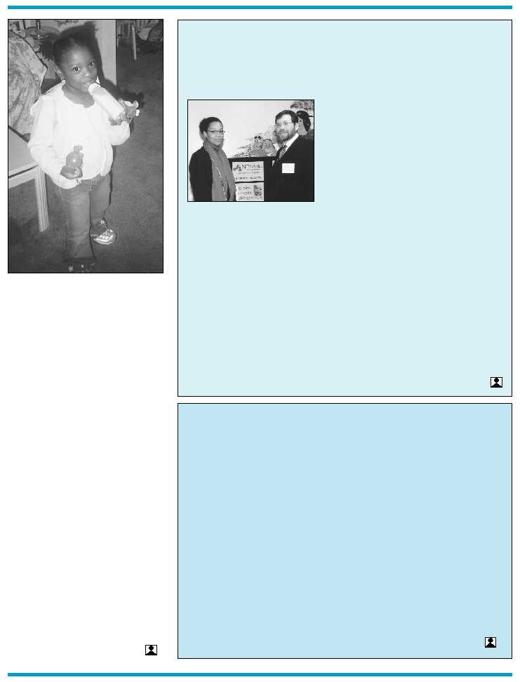

5
never seen.
But once Isabelle settled into her new
school, her progress was slow yet steady.
Though she still has oral sensory issues
and speech delays, she is learning to
express herself once again. With the help
of the Picture Exchange Communication
System (PECS) and ABA therapy, Isabelle’s
speech, language and social skills are
improving. Elizabeth’s advice to other
parents of autistic children is to have
patience and to expect a lot from their
child.
“When I gave up on Isabelle, she did
nothing. When I began to get in her face
and demand things of her, she started to
meet my expectations. She is really
coming out of her shell now,” says
Elizabeth.
Elizabeth is now rising to the chal-
lenge of caring for Isabelle. While she
doesn’t look too far into the future,
Elizabeth hopes that one day her daugh-
ter will be viewed as “normal,” and will be
able to discard the label “disabled.”
Elizabeth’s tenacity, sensitivity and
devotion are sure to bring Isabelle far in
meeting this goal.
THE BENEFITS OF
HOME-BASED EI SERVICES
AUTISM –
A MOTHER’S STORY
Cont’d from page 1
Netcare, Inc. provides a variety of
home-based Early Intervention services
throughout a rapidly growing service
area. Unlike traditional service delivery
models in which intervention is
removed from the child’s natural
environment and routine, home-based
services provide teachers and therapists
with many rich opportunities to
facilitate a child’s learning and develop-
ment in naturalistic and meaningful
interactions that often include other
family members. The home-based
model also enables service providers to
be an ongoing source of family support
and education. Through ongoing
interaction with teachers and thera-
pists, families are empowered to more
effectively contribute to their child’s
development in all domains, as well as
to serve as informed advocates on
behalf of their children, now and in the
future.
This enriching model naturally
includes additional challenges and
professional responsibilities. Netcare
provides educational and clinical
support for teachers and therapists.
Multi-disciplinary services are expertly
coordinated, issues discussed and
resolved, and senior consultants are
available to staff. For more information
regarding these resources and
workshops, call 718-677-4140.
• Our new Bronx satellite office, located at
1126 Pelham Parkway South, has taken
off, and we are already providing services
to a growing number of children and
families in the borough.
• Our experienced personnel provide
quality services throughout the Bronx, in
the child’s natural environment: daycare
centers, homes, community-based
settings, etc.
• When appropriate, evaluations and
services are provided in the child’s natural
EWS | NEWS | NEWS | NEW
IVE | COMPREHENSIVE | CO
language – with emphasis on the cultural
diversity of each child and family.
• We have recently been awarded approval
by the State Department of Health to
expand our Early Intervention services
to include center-based services, group
developmental services, family support
groups and parent-child groups.
• Our first order of business is to initiate
a Mommy-and-Me group at our Bronx
location. The groups (one hour, twice a
week) will focus on such issues as
behavior management and carry-over
techniques and provide an hour of
socialization opportunities for the
children.
• Plans are in place to move our Brooklyn
EI division to a new location in order to
accommodate the growing staff of service
and administrative coordinators.
• Next, we are looking to open another
satellite office in Queens to accommodate
the growing need there.
Janice Chisolm, EI Bronx
Regional Director, and Dr.
Joseph Geliebter at Open House